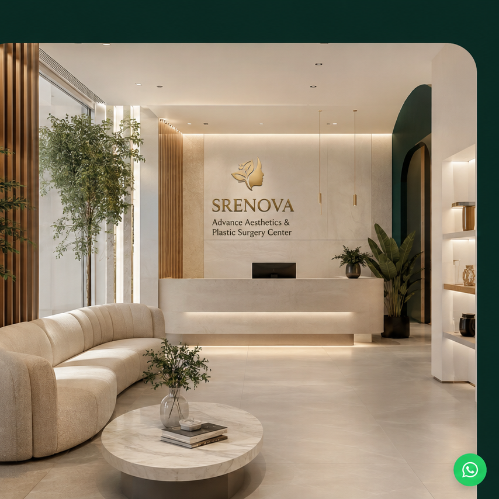

Skin and muscle review
Skin laxity, muscle separation and fat distribution assessed.
A tummy tuck, or abdominoplasty, removes excess abdominal skin and tightens the underlying muscle wall — addressing concerns that cannot be resolved by exercise alone.
SRENOVA plans abdominoplasty around the extent of skin laxity, degree of muscle separation and the client's recovery capacity.
Skin laxity, muscle separation and fat distribution assessed.
Extent of skin removal and muscle repair planned.

Step 03Incision length, belly button repositioning and liposuction if combined.
Pregnancy, significant weight loss and ageing can leave the abdominal skin loose and the muscle wall weakened in ways that cannot be improved through exercise.
The extent of the procedure — full, mini or modified — depends on the area involved and the amount of change required.
Technique depends on the area and degree of change required.
Addresses upper and lower abdomen with muscle repair.
For mild to moderate lower skin laxity without major muscle separation.
Fat reduction combined with skin tightening where appropriate.
Separated rectus muscles are sutured together to restore support.
Quick answers before messaging the clinic.
General anaesthesia and full recovery planning required.
Excess skin and muscle laxity addressed.
Limited activity and support garment advised.
Best after childbearing is complete.
Clear answers help compare options with confidence.
No. Abdominoplasty removes skin and repairs muscle but is not suitable as a primary method of weight reduction.
Yes. The scar is placed low, typically within the bikini line, and scar management is part of the post-operative plan.
In many cases yes, to address fat deposits alongside skin tightening. This is assessed at consultation.
Light activity is usually resumed after a few weeks, but strenuous exercise and heavy lifting require longer rest — discussed at consultation.
Book a SRENOVA consultation to assess your anatomy, discuss technique options and understand the full recovery process.